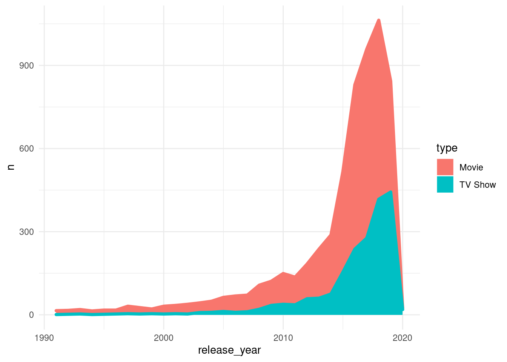
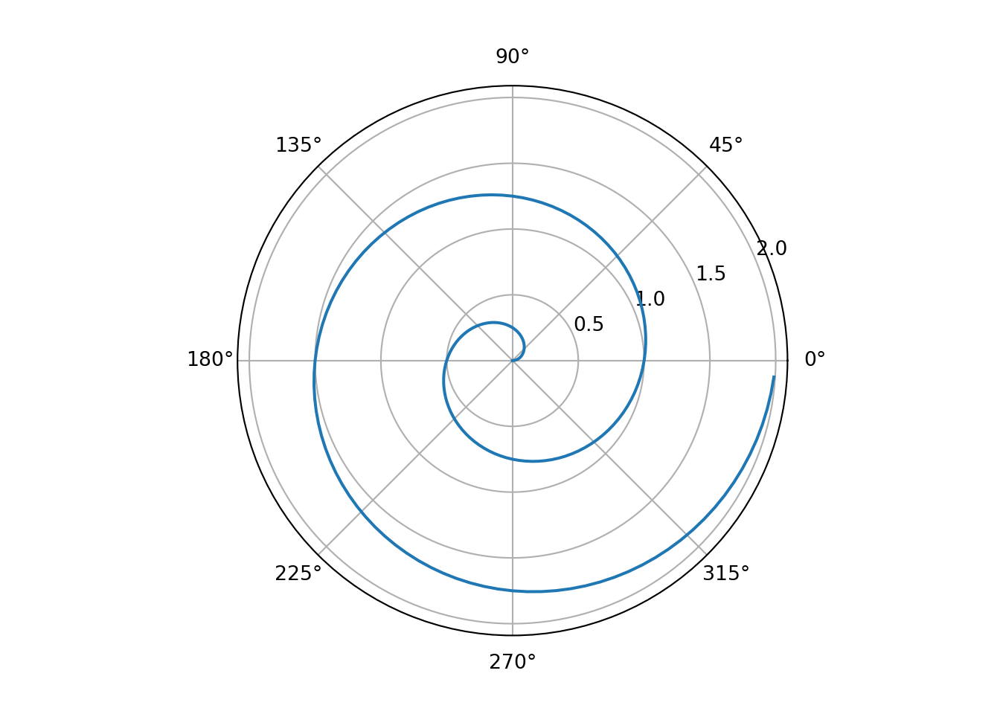

Voir le code
1 + 1[1] 2C’est un site de démo de “Quarto website”.
To learn more about Quarto websites visit https://quarto.org/docs/websites.
Il s’agit d’un simple calcul. J’ai laissé la possibilité de voir le code.
J’ai récupéré un jeu de données sur les films et séries Netflix. Le graphique présente le nombre cumulé de films et séries par année de sortie. Le code est accessible.
netflix_titles <- read_delim("data/netflix_titles.csv",
delim = ";", escape_double = FALSE, locale = locale(),
trim_ws = TRUE)
grp_netflix <- netflix_titles %>%
group_by(release_year, type) %>%
count() %>%
filter(nchar(release_year)==4)
grp_netflix %>%
filter(release_year >= 1991L & release_year <= 2020L) %>%
ggplot() +
aes(x = release_year, y = n, fill = type, colour = type) +
geom_area(size = 1.5) +
scale_fill_hue(direction = 1) +
scale_color_hue(direction = 1) +
theme_minimal()
J’ai récupéré un code tout fait en python et ça affiche un graphique. Le code est accessible.

Ne marche pas ici. A analyser ?